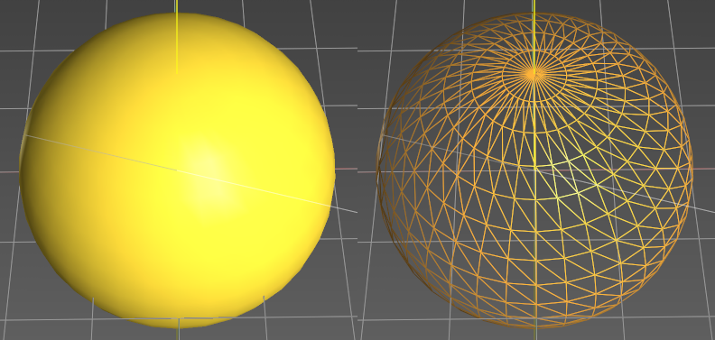

| |
|
Küre Oluşturma
|
|
Genel Bilgiler Bu menüde herhangi bir boyutta, herhangi bir konumda ve herhangi bir açıda küreler oluşturulabilir. Bir küre oluşturmak için en azından yarıçapının belirlenmesi gerekir. Eğer belirlenmez ve başka bir menüye geçilirse küre oluşturulmaz.  Seçenekler İsim: küreyi bir isimle tanımlamayı sağlar. Yorum: bu küre nesnesine açıklayıcı bir yorum eklemeyi sağlar. Renk: Renk butonu (bu örnekte turuncu) aracılığıyla küre için bir renk belirtilebilir. Varsayılan renk rastgeledir. Konum (X, Y, Z): kürenin tam konumunu belirtir. Eğer 3B grafik ortamında oluşturulursa, ilk tıklamaya karşılık gelen değerlerle doldurulur. Yönelim (X dönüşü, Y dönüşü, Z dönüşü): kutunun her bir eksen etrafındaki dönüşünü belirtir. Dönüşler Z->X->Y sırasında uygulanır. Z ekseni etrafındaki dönüş (azimut, heading) -400º ile 400º arasında değerler alır. X ekseni etrafındaki dönüş (pitch) -360º ile 360º arasında değerler alır. Y ekseni etrafındaki dönüş (roll) -360º ile 360º arasında değerler alır. Sahneden Kot Al: eğer kutu 3B grafik ortamından oluşturuluyorsa, kürenin sahnedeki nesnelerin üzerine oturacağını belirtir. Mevcut Kotu Kullan: küre 3B grafik ortamından oluşturulurken, konuma Istram'ın "Mevcut Kotu"na karşılık gelen kot atanır. Yarıçap: kürenin tam yarıçapını belirtmeyi sağlar. Eğer 3B grafik ortamında oluşturulursa, 3B oluşturma işlemine karşılık gelen değerlerle doldurulur. Bir kez belirlendiğinde küre nesnesi oluşturulmuş olur. Başka bir küre oluşturmak için "Küre Oluştur" butonuna tekrar basılmalıdır. Bölüntüler (meridyenler arası, paraleller arası): kürenin daha gerçekçi bir şekle ve aydınlatmaya sahip olmasını sağlayan yüzeylere bölünmesi için kullanılır. Yarım Küreler (kuzey, güney, doğu, batı): kürenin tamamının mı yoksa sadece gerekli olabilecek kısımlarının mı oluşturulacağını belirtmeyi sağlar. Pivot seçenekleri, kürenin hangi noktasının konum koordinatlarına yerleştirileceğini belirtir. Bu nokta şunlar olabilir: -Sınırlayıcı kutunun taban merkezi. -Sınırlayıcı kutunun merkezi. -Sınırlayıcı kutunun minimum koordinatları (varsayılan seçenek). -Minimum koordinatlara göre göreli pivot (X, Y, Z). Sınırlayıcı kutunun minimum koordinatları olarak sol alt köşe alınır. Kullanıcı tanımlı bir pivot belirtilirken, bu işlem sınırlayıcı kutunun köşesine göre göreli öteleme koordinatları (X, Y, Z) girilerek veya nesne üzerine tıklanarak yapılabilir. Bu durumda, ya "Pivotu taşı, geometriyi koru" seçeneği işaretlenerek pivot taşınabilir ya da "Minimum koordinatları taşı, pivotu koru" seçeneği ile geometrinin iç koordinatları değiştirilerek geometri taşınabilir.  Resimde şu parametrelere sahip bir küre gösterilmektedir: yarıçap=2, meridyenler arası bölüntüler=36, paraleller arası bölüntüler=18. |